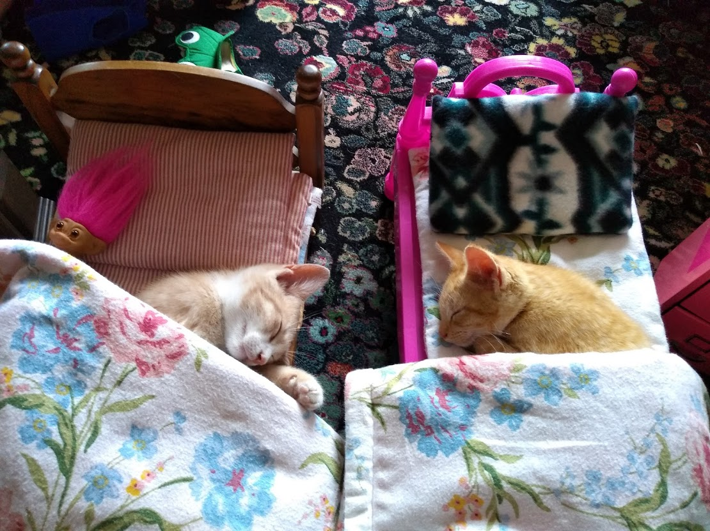

I moved down from my hometown of Missoula, Montana to Portland in 2005 and welded rail cars. Prior to that I worked in Chicago at the CBOE (Chicago Board Options Exchange.) After welding, I went to work at the then first Google built and designed datacenter for 13 years qualifying and stress testing hardware and servers. Due to personal issues and a long commute, I am currently unemployed. I have some experience with bash and linux but never was able to immerse myself in coding, thus, I signed up for Epicodus!
I currently live in Portland Oregon with my son Jonah, and daughter Arya. We have two cute Manx cats (Mirai and Kaden), three chickens and one duck (Rena Rainbow.)
